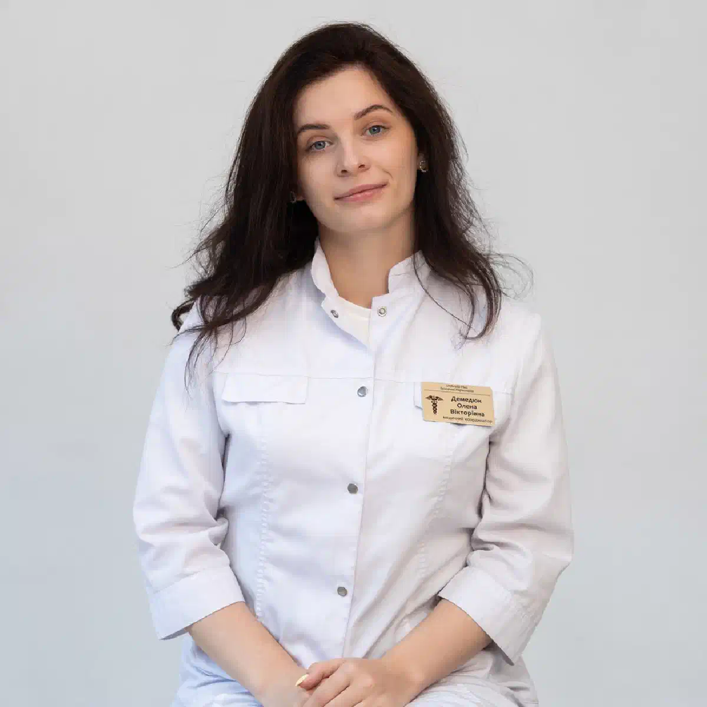

+38(068) 79 72 782
+38(068) 79 72 782Відкапати від алкоголю Одеса
Допомога при похмілля та запої


Безкоштовна консультація, працюємо цілодобово 24/7
Допомога при похмілля та запої

Дата написання: 26 черв. 2026 р.
Останнє оновлення: 29 лип. 2026 р.
Відкапати від алкоголю в Одесі можна вдома або в медичному закладі після обов’язкового оцінювання стану пацієнта. Крапельниця застосовується при алкогольній інтоксикації, вираженому похміллі, зневодненні та неускладненому абстинентному синдромі після тривалого вживання спиртного. Інфузійна терапія допомагає поповнити дефіцит рідини й електролітів, зменшити окремі симптоми та забезпечити контрольоване введення призначених лікарем препаратів. Крапельниця не виводить увесь алкоголь із крові за декілька хвилин і не є універсальним способом лікування залежності. Етанол переробляється переважно природними ферментними системами організму. Завдання нарколога полягає в оцінюванні ризиків, підтримці життєво важливих функцій, корекції виявлених порушень і запобіганні ускладненням.
Крапельниця може знадобитися, якщо після вживання алкоголю людина відчуває виражену слабкість, нудоту, повторне блювання, головний біль, сухість у роті, тремор, тривожність або прискорене серцебиття. Додатковими показаннями можуть бути ознаки зневоднення, неможливість нормально пити та значне погіршення загального самопочуття. Після тривалого запою інфузійна терапія розглядається як частина комплексної медичної допомоги. Людина може вживати чергову дозу вже не заради задоволення, а для тимчасового зменшення тремтіння, тривоги, слабкості та інших проявів відміни. У такому випадку однієї крапельниці від алкоголю може бути недостатньо: потрібне оцінювання тяжкості абстинентного синдрому та ризику ускладнень.
Алкогольна інтоксикація може супроводжуватися нудотою, блюванням, головним болем, порушенням координації, вираженою сонливістю, слабкістю та зміною поведінки. У деяких пацієнтів виникають прискорене серцебиття, коливання артеріального тиску, тривожність і зневоднення. Тяжкість стану залежить від кількості алкоголю, швидкості вживання, маси тіла, віку, прийнятих ліків і хронічних захворювань. Особливо непередбачуваною може бути реакція при поєднанні спиртного зі снодійними, транквілізаторами, знеболювальними або наркотичними речовинами. Небезпечними ознаками є неможливість розбудити людину, рідке або утруднене дихання, судоми, виражене посиніння шкіри, сильний біль у грудях і втрата свідомості. За таких симптомів потрібна екстрена наркологічна допомога, а домашня крапельниця від алкоголю не є відповідним варіантом лікування.
Абстинентний синдром виникає після припинення або значного скорочення вживання у людини, організм якої адаптувався до регулярного надходження алкоголю. Симптоми нерідко з’являються через декілька годин після останньої дози та можуть поступово посилюватися. До поширених проявів належать тремор рук, тривожність, дратівливість, пітливість, безсоння, нудота, слабкість, прискорене серцебиття та підвищення артеріального тиску. Людині стає складно розслабитися, заснути та спокійно перебувати без чергової дози алкоголю. Зняття алкогольної інтоксикації та лікування абстинентного синдрому потребують попереднього оцінювання стану лікарем, оскільки це різні медичні стани й тактика допомоги може відрізнятися. За тяжкого перебігу можливі судоми, галюцинації, виражена дезорієнтація та алкогольний делірій. Ризик особливо високий у пацієнтів, у яких подібні ускладнення вже виникали раніше.
Похмілля зазвичай виникає після одноразового вживання великої кількості алкоголю. Людина може відчувати головний біль, нудоту, сухість у роті, слабкість і підвищену чутливість до світла або звуків. У міру природного виведення алкоголю та відновлення організму стан поступово покращується. Алкогольна абстиненція розвивається за фізичної залежності після припинення регулярного вживання. Для неї характерні виражений тремор, тривожність, пітливість, безсоння, прискорене серцебиття та бажання знову випити, щоб тимчасово полегшити стан. Головна відмінність полягає не лише у тяжкості симптомів. За абстинентного синдрому існує ризик судом, галюцинацій та алкогольного делірію. Тому звичайні рекомендації від похмілля не підходять людині після тривалого запою.
Крапельниця від алкоголю вдома в Одесі може проводитися, якщо пацієнт перебуває при свідомості, самостійно дихає, адекватно відповідає на запитання та добровільно погоджується на лікування. Перед початком процедури нарколог проводить огляд і виключає ознаки стану, що потребує госпіталізації. Лікар вимірює артеріальний тиск, пульс, температуру та сатурацію, оцінює дихання, ступінь зневоднення, наявність тремору, блювання, набряків і порушень координації. Також уточнюються хронічні захворювання та препарати, які людина вже приймала. Домашній формат дозволяє отримати допомогу у звичній обстановці без поїздки до клініки. Поряд із пацієнтом бажана присутність дорослого родича, здатного спостерігати за його станом після завершення процедури та виконувати рекомендації лікаря. Навіть якщо лікування розпочалося вдома, у разі погіршення свідомості, появи судом, галюцинацій, порушення дихання або інших небезпечних симптомів може знадобитися госпіталізація до наркологічної клініки.
Процедура починається з консультації та медичного огляду. Нарколог з’ясовує, скільки часу людина вживала алкоголь, коли була прийнята остання доза, які симптоми з’явилися та чи є захворювання серця, печінки, нирок або нервової системи. Після оцінювання стану лікар визначає показання до інфузійної терапії та підбирає об’єм розчинів. Крапельниця встановлюється з дотриманням медичних правил, а під час введення препаратів контролюються самопочуття, артеріальний тиск, пульс та інші показники. Склад і швидкість інфузії залежать від віку пацієнта, ступеня зневоднення, вираженості симптомів і супутніх захворювань. Після процедури лікар повторно оцінює стан і надає рекомендації щодо питного режиму, харчування, сну та подальшого лікування алкогольного отруєння. Після запою може знадобитися повторне оцінювання стану наступного дня.
Універсального складу дезінтоксикаційної крапельниці, який підходив би кожному пацієнту, не існує. Схема лікування визначається після огляду та залежить від стану людини. До інфузійної терапії можуть входити сольові розчини й електроліти для корекції виявленого дефіциту рідини. За медичними показаннями лікар може використовувати вітаміни, препарати від нудоти та інші засоби для симптоматичної підтримки. Препарати для зменшення тривожності, збудження або порушень сну потребують особливої обережності. Їх не можна самостійно поєднувати із залишковим алкоголем, оскільки це може посилити сонливість, знизити артеріальний тиск і порушити дихання. Так звані препарати для підтримки печінки або серця не призначаються автоматично кожному пацієнту. Лікар враховує діагноз, протипоказання та можливу взаємодію з іншими ліками.
Крапельниця допомагає поповнити дефіцит рідини й електролітів, якщо він виник через блювання, недостатнє пиття або інші порушення. Це може зменшити слабкість, сухість у роті та окремі прояви зневоднення. Через венозний доступ лікар також може контрольовано вводити призначені препарати. Їхня дія спрямована на окремі симптоми, наприклад нудоту або інші порушення, виявлені під час огляду. Крапельниця від похмілля не прискорює перероблення етанолу в декілька разів і не здатна миттєво зробити людину повністю тверезою. Основна частина алкоголю виводиться завдяки природній роботі печінки та інших систем організму. Ефект процедури залежить від причини поганого самопочуття. За тяжкої абстиненції, алкогольного делірію або серйозного супутнього захворювання звичайної крапельниці недостатньо.
Виведення із запою в Одесі за допомогою крапельниці починається з медичного оцінювання. Лікар уточнює тривалість уживання, кількість алкоголю, час останньої дози, вираженість тремору, тривожності, безсоння та коливань артеріального тиску. За неускладненого стану допомога може надаватися вдома. Інфузійна терапія використовується для корекції зневоднення та інших виявлених порушень, а також для контрольованого введення призначених препаратів. Головне завдання полягає в безпечному припиненні вживання та запобіганні ускладненням. Просто поставити крапельницю недостатньо, якщо людина перебуває у тяжкому абстинентному стані або має високий ризик судом та алкогольного делірію. Після стабілізації пацієнту рекомендується продовжити лікування залежності. Виведення із запою допомагає пройти гострий період, але не усуває потяг і причини повторного вживання.
Тривалість термінової крапельниці від запою залежить від об’єму розчину, призначених препаратів, стану вен, артеріального тиску та загального самопочуття пацієнта. У середньому процедура може тривати близько однієї-двох годин, але точний час визначається індивідуально. Надто швидке введення великого об’єму рідини може створювати додаткове навантаження на серце й нирки. Тому лікар контролює швидкість інфузії та за потреби змінює її під час процедури. Після завершення крапельниці спеціаліст повторно оцінює артеріальний тиск, пульс, свідомість і вираженість основних симптомів. Пацієнту може знадобитися додаткове спостереження, особливо після тривалого запою.
Деякі пацієнти відзначають зменшення нудоти, сухості у роті, головного болю та слабкості під час процедури або невдовзі після її завершення. Однак швидкість покращення залежить від тяжкості інтоксикації, тривалості запою та загального стану здоров’я. Порушення сну, тривожність і тремор можуть зберігатися довше. За абстинентного синдрому симптоми іноді посилюються після тимчасового покращення, тому важливо виконувати рекомендації лікаря та спостерігати за станом пацієнта. Крапельниця не гарантує повного відновлення за один візит. Якщо самопочуття не покращується або з’являються нові симптоми, потрібна повторна наркологічна допомога.
Кількість процедур не можна визначити лише за кількістю днів уживання. Одному пацієнту може бути достатньо одного візиту, іншому знадобляться повторний огляд і продовження лікування. Лікар враховує вік, вираженість зневоднення, стан серця, печінки та нирок, наявність блювання, порушення сну, артеріальний тиск і ризик ускладнень. Повторна крапельниця від алкоголю в Одесі призначається лише за наявності медичних показань. Автоматично ставити декілька крапельниць поспіль без контролю лікаря не слід. Надмірний об’єм рідини може бути небезпечним за серцевої недостатності, захворювань нирок і схильності до набряків. Після тривалого запою пацієнту може знадобитися не повторна домашня інфузія, а лікування у стаціонарі з лабораторними дослідженнями та постійним спостереженням.
Проведення крапельниці від токсинів невдовзі після вживання можливе не в усіх випадках. Спочатку лікар має визначити ступінь сп’яніння, стан свідомості, дихання та серцево-судинної системи. Якщо людина контактна, самостійно дихає та не має небезпечних симптомів, спеціаліст може провести медичне оцінювання й вирішити, чи є показання до інфузії. Однак крапельниця не зробить людину миттєво тверезою та не скоротить період виведення алкоголю до декількох хвилин. За вираженої сонливості, втрати свідомості, рідкого дихання, повторного блювання з ризиком захлинутися або підозри на поєднання алкоголю з лікарськими засобами потрібна екстрена медична допомога. Не можна самостійно давати нетверезій людині снодійні, сильнодійні заспокійливі або інші препарати, щоб вона «швидше заснула».
Домашня інфузійна терапія не проводиться без попереднього огляду. Обмеженнями можуть бути тяжкі захворювання серця та нирок, виражені набряки, алергічні реакції на препарати й інші стани, за яких введення рідини потребує особливої обережності. Протипоказанням до звичайної домашньої процедури є тяжка інтоксикація з порушенням свідомості або дихання. Крапельниця також не замінює стаціонар у разі судом, галюцинацій, психозу та алкогольного делірію. Вагітність, похилий вік, епілепсія, цукровий діабет і серйозні хронічні захворювання потребують індивідуального оцінювання. Лікар може рекомендувати обстеження або амбулаторне виведення із запою навіть за відсутності виражених симптомів. Остаточне рішення про можливість інфузійної терапії приймає медичний спеціаліст після огляду.
Домашня крапельниця від запою не проводиться за втрати або вираженого порушення свідомості, судом, галюцинацій, алкогольного делірію та тяжкого психомоторного збудження. За таких станів необхідні постійне спостереження та можливість екстреного лікування. Госпіталізація потрібна за утрудненого дихання, сильного болю у грудях, підозри на інсульт чи інфаркт, вираженого порушення серцевого ритму та критичних коливань артеріального тиску. Домашній формат також може бути небезпечним за багаторазового блювання, тяжкого зневоднення, високої температури, поєднання алкоголю з наркотиками або невідомими препаратами. Якщо пацієнт агресивний, не контролює поведінку та створює загрозу собі або оточенню, необхідно звертатися до екстрених служб.
Стаціонарне виведення із запою необхідне, якщо пацієнт має високий ризик ускладнень або потребує постійного медичного спостереження. До таких ситуацій належать тривалий запій, попередні судоми, алкогольний делірій і повторні епізоди тяжкої абстиненції. Лікування у стаціонарі потрібне за порушення свідомості, галюцинацій, психозу, вираженої дезорієнтації та агресії. Додатковими показаннями можуть бути серйозні захворювання серця, печінки, нирок і нервової системи. У стаціонарі доступні цілодобовий контроль артеріального тиску, пульсу, дихання та психічного стану, лабораторні дослідження, електрокардіографія й корекція терапії у разі зміни показників. Госпіталізація є не покаранням, а способом забезпечити безпеку пацієнта у період підвищеного ризику.
Під час тривалого запою організм регулярно отримує алкоголь і поступово виснажується. Порушуються харчування, сон і водно-електролітний баланс, підвищується навантаження на серце, судини, печінку, нирки та нервову систему. Людина може перестати контролювати кількість випитого та вживати алкоголь для тимчасового зменшення абстинентних симптомів. Це підтримує запій і відкладає розвиток тяжкої відміни. Після припинення вживання можуть виникнути різке підвищення артеріального тиску, виражений тремор, безсоння, судоми, галюцинації та алкогольний делірій. Родичі не завжди здатні вчасно розпізнати наближення ускладнень. Чим довше триває запій і чим тяжчі супутні захворювання, тим вища ймовірність необхідності стаціонарного лікування алкоголізму.
Самолікування стає небезпечним, коли людина безконтрольно приймає снодійні, транквілізатори, нейролептики, серцеві препарати або ліки від тиску. Їх поєднання з алкоголем може призвести до надмірної сонливості, різкого зниження артеріального тиску та пригнічення дихання. Виведення із запою без крапельниці можливе не в усіх випадках і має обговорюватися з лікарем. За відносно легкого стану спеціаліст може рекомендувати питний режим, харчування, відпочинок і спостереження, але така тактика не підходить за вираженої абстиненції та ризику ускладнень. Не слід намагатися прискорити відновлення за допомогою сауни, інтенсивних фізичних навантажень, енергетичних напоїв або холодного душу. Ці методи можуть посилити зневоднення та навантаження на серцево-судинну систему. Небезпечно залишати людину одну за вираженої слабкості, дезорієнтації або незвичної сонливості. До приїзду лікаря необхідно стежити за свідомістю та диханням пацієнта. У разі судом, галюцинацій, втрати свідомості, порушення дихання або болю у грудях необхідно негайно викликати екстрену медичну допомогу.
Планова крапельниця від алкогольної інтоксикації проводиться після отримання добровільної інформованої згоди пацієнта. Людина має розуміти, яку процедуру їй пропонують, навіщо вона потрібна та які можливі обмеження. Родичі можуть викликати нарколога для огляду, консультації та мотиваційної бесіди. Однак лікар не може примусово поставити крапельницю людині, яка перебуває при свідомості, розуміє ситуацію та відмовляється від лікування. Не можна таємно додавати лікарські препарати в їжу або напої. Невідома доза та поєднання з алкоголем можуть викликати тяжку реакцію. Винятком є екстрені стани з безпосередньою загрозою життю, коли пацієнт не здатний висловити свою волю. У такій ситуації необхідно звертатися до екстреної медичної служби.
Виклик нарколога додому в Одесі дозволяє отримати медичний огляд і первинну допомогу без поїздки до клініки. Такий формат зручний за слабкості, тривожності, тремору, безсоння та інших неускладнених симптомів. Під час телефонного звернення бажано повідомити вік пацієнта, тривалість уживання, час останньої дози, основні скарги та хронічні захворювання. Важливо одразу попередити про судоми, галюцинації, порушення свідомості або дихання. Після приїзду нарколог вимірює артеріальний тиск, пульс і сатурацію, оцінює свідомість та визначає, чи можна проводити лікування вдома. За наявності показань встановлюється крапельниця та призначається симптоматична терапія. Якщо домашній формат є небезпечним, лікар рекомендує госпіталізацію або виклик екстреної допомоги.
Середній час приїзду нарколога по Одесі становить близько 30–40 хвилин. Фактичний час залежить від району, дорожньої ситуації, відстані до адреси та поточної завантаженості медичної бригади. Під час оформлення виклику оператор уточнює адресу та основні симптоми пацієнта. Це допомагає попередньо оцінити терміновість і підготувати лікаря до огляду. Якщо у людини виникли судоми, втрата свідомості, порушення дихання або сильний біль у грудях, не можна орієнтуватися на час планового приїзду нарколога. Необхідно одразу телефонувати за номером 103.
Анонімна наркологічна допомога вдома в Одесі дозволяє отримати консультацію та лікування конфіденційно. Інформація про стан пацієнта й проведені процедури належить до медичних даних і не розголошується стороннім особам без законних підстав. У приватній медичній службі допомога може надаватися без взяття на диспансерний облік. Пацієнт може заздалегідь уточнити порядок оформлення документів та умови конфіденційності. Анонімність не означає, що від лікаря слід приховувати медичні відомості. Для безпечного лікування необхідно чесно повідомити про тривалість уживання, хронічні захворювання, прийняті ліки та попередні ускладнення. Якщо стан загрожує життю, пріоритетом залишається екстрена медична допомога та госпіталізація.
Вартість послуги відкапати від алкоголю в Одесі починається від 2199 грн.
| Популярні послуги | Ціна |
|---|---|
| Нарколог Одеса | Від 1500 грн |
| Крапельниця від алкоголю | Від 2199 грн |
| Виведення із запою вдома | Від 2199 грн |
| Кодування від алкоголізму | Від 6000 грн |
Укол від алкоголізму може розглядатися після завершення гострого періоду та стабілізації стану. Крапельниця й виведення із запою не є підготовкою до негайного кодування у той самий момент. Перед процедурою пацієнт має перебувати у тверезому стані. Зазвичай потрібно щонайменше 3–5 днів без алкоголю, а після тривалого запою лікар може збільшити цей період. Для медикаментозного кодування можуть застосовуватися препарати з різними механізмами дії. Метод підбирається з урахуванням стану здоров’я, протипоказань, попереднього досвіду та цілей пацієнта. Кодування проводиться лише добровільно. Пацієнт має розуміти принцип дії препарату та дотримуватися повної відмови від уживання алкоголю.
Детоксикація допомагає стабілізувати фізичний стан, але не усуває залежність. Після покращення самопочуття у людини можуть зберігатися потяг, безсоння, тривожність і звичка використовувати алкоголь для розслаблення. Подальше лікування алкогольної залежності може включати консультації нарколога, психотерапію, медикаментозну протирецидивну підтримку, кодування та роботу з родичами. Програма підбирається індивідуально. Важливим завданням є виявлення ситуацій, які провокують уживання. Це можуть бути стрес, конфлікти, самотність, безсоння, певна компанія або звичка випивати після роботи. Комплексне лікування допомагає не лише припинити вживання, а й знизити ризик повторних зривів.
Після крапельниці від інтоксикації фізичний стан може покращитися, але психологічний потяг і звичні моделі поведінки зберігаються. Людина знову стикається зі стресом, тривожністю, безсонням або оточенням, пов’язаним із вживанням. Деякі пацієнти сприймають крапельницю як спосіб швидко усунути наслідки алкоголю та продовжують пити, розраховуючи повторно викликати лікаря. Такий підхід підвищує ризик повторних запоїв і тяжких ускладнень. Причиною зриву також може бути відсутність подальшого лікування. Без психотерапії, медичного спостереження та зміни звичок людина повертається до попереднього сценарію. Після детоксикації бажано обговорити з наркологом протирецидивну програму та скласти план дій на випадок посилення потягу.
Цілодобова допомога нарколога в Одесі доступна вдень, уночі, у вихідні та святкові дні. Звернутися по консультацію можна за запою, вираженого похмілля, абстинентного синдрому та погіршення самопочуття після вживання алкоголю. Лікар може приїхати додому, провести огляд, оцінити життєво важливі показники та за наявності показань встановити крапельницю. Після процедури пацієнт отримує рекомендації щодо подальшого спостереження та лікування. Цілодобовий виїзд не означає, що будь-який стан можна лікувати вдома. У разі судом, галюцинацій, втрати свідомості, порушення дихання, сильного болю у грудях або вираженої сплутаності свідомості необхідно негайно телефонувати за номером 103.
Телефон для консультації та виклику нарколога в Одесі: +38(050-021-69-57)

Статтю перевірено експертом
Богоденко Костянтин
Лікар-анестезіолог, ординатор
Можливо цікава стаття:
Як самостійно вийти із запою

Так, ми суворо дотримуємося повної конфіденційності на всіх етапах лікування. Інформація про пацієнта, діагноз та проходження терапії не передається третім особам. Звернення до нас не тягне за собою постановку на облік. Ви можете бути впевнені у безпеці та анонімності.
Програма лікування розробляється індивідуально після консультації з фахівцем. Враховуються вид залежності, її тривалість, фізичний та психологічний стан пацієнта. Такий підхід дозволяє підвищити ефективність терапії та знизити ризик зриву. Ми не використовуємо шаблонні рішення.
Так, ми супроводжуємо пацієнтів і після основного курсу лікування. Проводяться консультації, рекомендації щодо адаптації та профілактики рецидивів. За потреби можлива подальша психологічна підтримка. Це допомагає зберегти результат та повернутися до повноцінного життя.
Анонимно

Ну в хлопців просто золоті руки й світла голова, мене капали Олексій та Владислав, буквально за декілька сеансів я наче заново народився, до цього пив більше 3х тижнів, не міг зупинитись, дуже радий що знайшов саме цих спеціалістів, всім рекомендую
Анонимно
В течение нескольких лет я злоупотреблял алкоголь, что привело к увольнению с работы и вызвало у меня мысли о суициде. Понимая, что такой образ жизни неприемлем, я обратился за помощью в клинику “Амбрела”. Здесь я смог преодолеть свою зависимость от спиртного благодаря заботливым и опытным врачам, а также эффективной системе лечения. Спустя более года я полностью избавился от желания употреблять алкоголь, и теперь моя жизнь вернулась в норму. Я даже не приближаюсь к спиртному! Благодарю врачей клиники “Амбрела” за их помощь и заботу.
Анонимно
Я обращался за помощью в различные клиники, пытаясь избавиться от своей зависимости от алкоголя, но без особых успехов. Никак не мог справиться с желанием прибегнуть к бутылке, пока друг не посоветовал мне обратиться в центр “Амбрелла”. Я записался на прием и был поражен заботливым отношением к пациентам. Уже прошло два года, и теперь я смотрю на алкоголь с абсолютной равнодушием, активно занимаюсь спортом и улучшил отношения в семье. Благодаря центру “Амбрелла” моя жизнь была спасена от алкогольной зависимости!
Анонимно
Хочу выразить свою благодарность врачам из центра алкоголизма “Амбрела” за то, что они буквально спасли мою жизнь. В течение последнего года я сильно увлекался питьем, и все это привело к катастрофическим последствиям. Хотя я ходил на терапевтические сеансы, но безрезультатно. Тогда я нашел адрес клиники “Амбрела” в интернете, изучил отзывы и информацию о центре, и записался на прием. Там мне сразу предложили методику лечения, которая помогла не только справиться с физической ломкой, но и психической зависимостью от алкоголя. Не буду распространяться, скажу только одно - после пребывания в этой клинике я стал другим человеком, и навсегда забыл, что такое привкус алкоголя. Больше меня не тянет на это! Я искренне верю, что в центре “Амбрела” трудятся настоящие целители душ!
Анонимно
После сложного развода мой сын начал подавлять свою обиду и горе употреблением алкоголя. Он старался скрывать это от меня, но я, как мать, почувствовала, что что-то не так. В конечном итоге, ситуация стала критической. Моя знакомая посоветовала мне обратиться в клинику “Амбрела”. Я была приятно удивлена их работой! Они помогли сыну преодолеть очередной период злоупотребления алкоголем, и с тех пор прошел уже более года, и он совсем не пьет.
Анонимно
Благодаря вашей помощи, моя семья была спасена. Я с трудом уговорила мужа начать лечение, и последний каплей был пьяное ДТП. К счастью, в аварии никто не пострадал, но это был для него сигнал к действию. Он наконец согласился пройти курс лечения на дому, в стационар не хотел ложиться. Лечение было трудным, и были моменты, когда срыв был настолько близок, но благодаря вашему центру Амбрелла мы справились с этим.
Анонимно
Для меня эта клиника стала настоящим спасением! Долгое время я упорно отказывался от лечения, уверен был, что со мной все в порядке. Но к счастью, семья уговорила меня попробовать. И сегодня я чувствую себя невероятно счастливым, осознавая, что мне абсолютно не нужен алкоголь. Огромное спасибо за помощь и поддержку, которые я получил здесь! Я благодарен вам за новую возможность жить полноценной и счастливой жизнью!
Анонимно
Выражаю благодарность ребятам, которые оказали мне помощь и не отвернулись. Уже 10 месяцев я остаюсь чистой. Благодарю за то, что помогли найти новый путь в моей жизни.
Номер телефону:
+380 (68) 797 27 82
+380 (50) 021 69 57
Адресу наркологічного центра вашого міста уточнюйте за
телефоном
Працюємо: Київ, Одеса, Львів, Харків, Дніпро, Запоріжжя,
Черкасах, Чугуєві, Чорноморську, Кам'янському
Telegram: t.me/umbrellaplus
Графік работы: Цілодобово